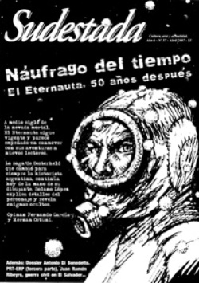

Buscar
Julio Ramón Ribeyro: una vida con literatura
Escritor de culto en su país, hoy la crítica lo reconoce unánimemente como uno de los mejores cuentistas hispanoamericanos. Julio Ramón Ribeyro es uno de los grandes representantes de la narrativa peruana surgida a partir de los años cincuenta. (PRIMERA PARTE)
Edición N° 57
Abril 2007
Revista bimensual
Comprar edición impresaSumario
- El Eternauta, 50 años después: Náufrago del tiempo
- Pulsión de vida
- Antonio Di Benedetto: La espera
- PRT-ERP: Apuntes de un sueño armado (Tercera parte)
- Julio Ramón Ribeyro: una vida con literatura
- El Salvador: de la guerra a la Krisis
Compartir Articulo
Amberes, inicios del otoño de 1957. En el cuarto de una pensión austera, bajo la luz crepuscular, un joven magro de tez blanca, entre bocanadas de humo, registraba en su diario íntimo:
"Comprobación interesante: hasta qué punto la labor creadora implica la autodestrucción del creador. Escribir es como hacer el amor: una cosa brutal, fatigante, en la cual morimos y renacemos. Luego de escribir una página caigo extenuado en la cama, los ojos ardientes, la náusea del tabaco y la sensación de la consumición física. Y ello es el precio de veinte líneas, ni buenas ni malas, que serán probablemente corregidas o eliminadas, pero en cuya elaboración hemos puesto lo mejor de nosotros mismos". Estas líneas, testimonio intenso del extenuante proceso de creación literaria, fueron escritas por el peruano Julio Ramón Ribeyro, a los 28 años.
Durante su estada en Bélgica, las horas que le dejaba libre el trabajo en la fotografía, las dedicaba a la escritura de cuentos, de una novela y de su diario personal. En éste asentaba desde hacía siete años, con gran poder expresivo, impresiones personales acerca de los avatares de su vida cotidiana, su entorno y la evolución de sus sentimientos: su entusiasmo y desaliento, sus sueños y dudas, sus añoranzas, las ilusiones y desventuras amorosas, los amigos, la vida desordenada, los estragos en su salud, la severa mirada autocrítica hacia sus empeños en el quehacer literario y las notas dedicadas a los autores que leía con fruición.
En aquel tiempo, trabajaba de manera discontinua en una novela que había principiado en Munich casi dos años antes. Acerca de tal manuscrito, Ribeyro escribía el 6 de octubre:
"Me acongoja ver tanto trabajo acumulado y vano, donde hay cuatro o cinco páginas inspiradas que merecen un mejor destino. Decisión de concluirla a cualquier precio, renunciando a mis nuevos y tentadores proyectos. Más tarde me será difícil reencontrar el tono. Mientras continúe inconclusa no podré formarme una idea acerca de su valor, ni aventurar ninguna corrección".
El hilo argumental de dicha novela se despliega en el mundo rural, en una hacienda de la sierra norte del Perú. Es desde la mirada de un adolescente, proveniente de Lima, que se descubre la vida en aquella hacienda y el tramado de relaciones ambiguas en una familia de terratenientes. La visión que se propone del mundo de los señores o patrones corresponde al de una clase en decadencia. El título original de la novela era Crónica de un reino perdido, que sería rebautizado por el de Crónica de San Gabriel.
Al año siguiente, encontrándose en su ciudad natal, Ribeyro hubo de dar cima a esta obra. El libro fue publicado en Lima, en 1960, y mereció el elogio de la crítica, que puso de relieve sus valores literarios. Crónica de San Gabriel habría de convertirse en una de las novelas de mayor belleza, por su lenguaje y estilo, de la narrativa peruana.
Páginas biográficas
Santa Beatriz, un barrio mesocrático de la capital peruana, vio nacer a Julio Ramón Ribeyro Zúñiga, el 31 de agosto de 1929. Entre los recuerdos de infancia que el escritor convocaba, aparecía la imagen de su adusto padre reuniendo en la sala de la casa a sus cuatro hijos para leerles cuentos o fragmentos de novelas. Este hecho alentó en el pequeño y retraído Julio Ramón el interés por los libros y la lectura. Muchos años después, Ribeyro, evocando tal episodio, reconocía en su padre a la persona que primordialmente había contribuido a su formación literaria, y pensaba que cuando decidió dedicarse a la literatura lo que buscaba, en el fondo, era escribir los libros que su padre no había conseguido plasmar (el padre de Ribeyro murió tempranamente, a mediados de la década del cuarenta).
Homero, Cervantes, Salgari, Dumas y Verne fueron algunos de los primeros autores que, durante su infancia, Julio Ramón leyó con exaltación.
Un hecho importante en la vida de la familia Ribeyro ocurrió cuando se avecindó en Miraflores, distrito del sur de Lima, colindante con el mar. Julio Ramón tenía seis años de edad, y este hecho marcaría su niñez y su adolescencia (en el otrora idílico Miraflores, se ambientarían muchos de sus cuentos, como los que conforman Relatos Santacrucinos, obra de carácter autobiográfico).
Entre 1937 y 1945, cursó estudios en una institución católica: el Colegio Champagnat de Miraflores. En la escuela, Julio Ramón no fue un alumno brillante, tampoco destacó en el deporte; aunque sí gustaba del fútbol. Era un niño tímido y afecto a la soledad. De estos años datan sus primeros escarceos literarios: inicialmente fueron poemas, inspirados en la obra de Zorrilla y Espronceda, y más tarde, durante los últimos años de la secundaria, comenzó a escribir cuentos...
(La nota completa en la edición gráfica de Sudestada)
Comentarios
Gabriel García Higueras, desde Perú
Articulos más vistos


LIBRERÍA SUDESTADA

Colección infantil

Distribuidora de Libros

Suscripción

Sudestada en URUGUAY

Otros articulos de esta edición
El Eternauta, 50 años después: Náufrago del tiempo
A medio siglo de la nevada mortal, el Eternauta sigue vigente y parece empeñado en conmover con sus aventuras a ...
PRT-ERP: Apuntes de un sueño armado (Tercera parte)
Esta es la historia de Lionel MacDonald, o Pasto Seco, o Capitán Raúl. Referente estudiantil en Santa Fe, Lionel caminó ...
Pulsión de vida
"Y lo repito una vez más: hemos vivido por la alegría, por la alegría hemos ido al combate y por ...
Antonio Di Benedetto: La espera
A 20 años de su muerte, y a partir de la reedición de sus libros existe en la actualidad un ...
El Salvador: de la guerra a la Krisis
Los años setenta fueron tiempos de movilización popular, de represión y de guerrilla también en Centroamérica. Crónica de los orígenes ...